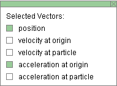
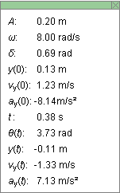
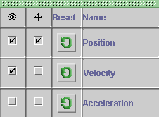
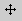
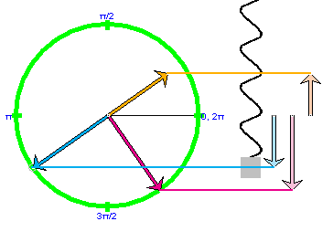
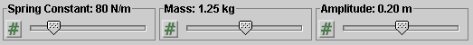
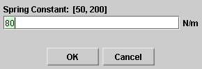

There are four basic control buttons. They are, from left to right:
-
 /
/ Play/Pause. Clicking starts the
motion.
Play/Pause. Clicking starts the
motion.
After Play has been clicked, the button will change into the Pause button
.
Click it if you want to take a 'snapshot' of the motion at a given instant. To resume the motion, click Play once more.
-
 Step. Lets you step through the motion in equal
time steps.
Step. Lets you step through the motion in equal
time steps.
-
 Rewind. Resets the simulation to the starting point
with the previously chosen system parameters. After
clicking Rewind, click Play to restart the motion.
Rewind. Resets the simulation to the starting point
with the previously chosen system parameters. After
clicking Rewind, click Play to restart the motion.
-
 Reset. Resets the applet to its default setting.
Reset. Resets the applet to its default setting.
Adjustments in the system parameters can only be made after first clicking REWIND or RESET.



Selecting the Vectors toggle button displays the Vector panel illustrated above. By checking any of the five checkboxes on the panel, different vectors and/or their vertical components can be displayed. In the example above, the position vector and the acceleration vector are checked, the latter so that it is shown with its tail end at the origin, which is at the center of the reference circle. (See Point 4 below.) The position and acceleration vectors are shown in the image at the Top.
The following vectors can be displayed:
- position: position vector of point revolving in reference circle and/or its vertical component; the latter is equal to the displacement of the oscillating block; color: cyan
- velocity at origin: velocity vector of point revolving in reference circle with tail end fixed at center of circle, and/or its vertical component; the latter is equal to the velocity of the oscillating block; color: magenta
- velocity at particle: velocity vector of point revolving in reference circle with tail end attached to revolving point, and/or its vertical component with tail end attached to the moving block; color: magenta
- acceleration at origin: acceleration vector of point revolving in reference circle with tail fixed at center of circle, and/or its vertical component; the latter is equal to the acceleration of the oscillating block; color: orange
- acceleration at particle: acceleration vector of point revolving in reference circle with tail end attached to revolving point, and/or its vertical component with tail end attached to the moving block; color: orange
To display a vector it is not sufficient to check it on the Vector panel. The green Reference Circle must be displayed also. See Point 4.
To display the vertical component of a vector, the vector must be checked in the Vector panel and, in addition, the Components button must be selected. (See Point 3 below.)

The Components toggle button displays/hides the vertical component vectors of any vectors (position, velocity, acceleration) selected on the Vector panel described in Point 2. The component vectors of position (pale cyan) and acceleration (pale orange) are shown to the right of the spring in the image at the Top.
Items are color-coded: cyan for position, magenta for velocity, orange for acceleration. The component vectors are in paler colors than the reference circle vectors.
The Reference Circle toggle button displays or hides the green reference circle, which is the path of the uniformly revolving point that gets projected onto the oscillating block.
The values 0, p/2, p, etc., indicated around the perimeter of the reference circle, are radian measures of the location angle q of the uniformly revolving point.

The Data toggle button either displays or hides the Data box illustrated below. If you click on the Data box and drag, you can move it anywhere on the screen or even off the screen. You can close the box either by clicking the "X" in the top right corner of the box or pressing the Data button again.

The following data are displayed in the Data box.
Top half. Constants of the motion and initial conditions.
- A: amplitude
- w: angular frequency
- d: phase angle; equal to q(0) (see below)
- y(0): displacement from equilibrium of the oscillating block at t = 0
- vy(0): velocity of the oscillating block at t = 0
- ay(0): acceleration of the oscillating block at t = 0
Note about d and y(0). The phase angle d and the initial displacement y(0) can be chosen before starting the motion by dragging the revolving point (shown as a faint small grey circle) on the green reference circle. The initial velocity vy(0) and acceleration ay(0) will be adjusted accordingly.
Bottom half. Values of time-dependent quantities at time t.
- t: time
- q(t): position angle of point revolving on green reference circle at the tip of the blue position vector, measured in the positive sense from the horizontal reference direction in grey; values of q in radian are indicated on the perimeter of the reference circle; q(0) is equal to the phase angle d
- y(t): displacement from equilibrium of the oscillating block at time t; represented by the vertical blue arrow
- vy(t): velocity of the oscillating block at time t; represented by the vertical pink arrow
- ay(t): acceleration of the oscillating block at time t; represented by the vertical orange arrow

The Graphs toggle button either displays or hides the graph panel which lets you check the graphs you want to have displayed. The graph panel is illustrated below.

The panel lets you select graphs of position vs. time, velocity vs. time, and acceleration vs. time. For each graph, the following three actions can be selected by means of the graph panel.
-
 Visibility checkbox. When this is checked, the
graph of the respective variable is displayed.
Visibility checkbox. When this is checked, the
graph of the respective variable is displayed.
With the panel illustrated above, the position and velocity graphs are displayed.
-

Move graph checkbox. When this is checked, the
graph of the respective variable can be dragged
anywhere in the applet window.
With the panel illustrated above, the position graph can be moved.
-
 Reset graph button. When this button is clicked for
a variable on the panel, the graphs of that variable are
erased, but the axes remain visible.
Reset graph button. When this button is clicked for
a variable on the panel, the graphs of that variable are
erased, but the axes remain visible.
In each graph, the time t on the horizontal axis is in units of seconds (s). The time axis has divisions that are fractions of p, e.g., p/4. These indicate fractions of seconds, e.g., p/4 s. These divisions do not indicate fractions (or multiples) of radians.
If a graph has been moved, the horizontal projecting line (see Point 7 below) will no longer connect to that graph. Only resetting the applet will restore this functionality.

The Projection toggle button displays/hides color-coded horizontal lines connecting any corresponding quantities on display, e.g., the blue line connecting the tip of the position vector (dark blue) to the tip of its vertical component (light blue) and to the center of the block at the end of the spring. See the diagram below.

Graphs, when displayed, will also be connected in this manner. E.g., see the graph of ay vs. t in the snapshot at the Top.

The Zoom toggle button displays the vectors, their components, and corresponding graphs either in standard size or reduced size. The size reduction affects the three variables of position, velocity, and acceleration as follows.
- Position: no reduction.
- Velocity: reduction by a factor of 2.
- Acceleration: reduction by a factor of 4.

There are three sliders in all. They are described below, in the order from left to right.
You can adjust a slider setting either by dragging the slider tab or by entering an exact value in the slider input dialog.
To enter an exact value, click on the Input Dialog button
 of the slider to open the
dialog. The dialog for the Spring Constant slider is
illustrated below. The range in which values can be
entered, from 50 N/m to 200 N/m in this case, is indicated
above the data entry field.
of the slider to open the
dialog. The dialog for the Spring Constant slider is
illustrated below. The range in which values can be
entered, from 50 N/m to 200 N/m in this case, is indicated
above the data entry field.

Clicking on a slider to the left or right of the slider tab allows fine adjustment of the slider setting.
-
Spring Constant Slider. This slider lets you adjust the spring constant k in the range from 50 N/m to 200 N/m, in steps of 1 N/m..
When the spring constant is increased, the spring shortens. This is simulated in the applet. Also the wires of the spring are shown to be getting thicker.
Note that the suspension point of the spring is at a point above the applet window and therefore invisible. Also, the applet is designed to keep the equilibrium point of the block at a fixed point in the applet window. Thus, changes in the length of the spring will be apparent from turns of the spring either moving into view or out of view at the top of the applet window.
-
Mass Slider. This slider lets you adjust the mass m of the oscillating block between 0.50 kg and 2.00 kg, in steps of 0.01 kg.
Changes in the mass are indicated by the size of the block attached to the spring. They also cause the spring to contract or lengthen depending on whether the mass is decreased or increased, respectively. Changes in the length of the spring are simulated as described above in connection with the spring constant slider.
-
Amplitude Slider. This slider lets you adjust the amplitude A of the oscillation in the range from 0.10 m to 0.30 m, in steps of 0.01 m.
The radius of the reference circle is equal to the amplitude.